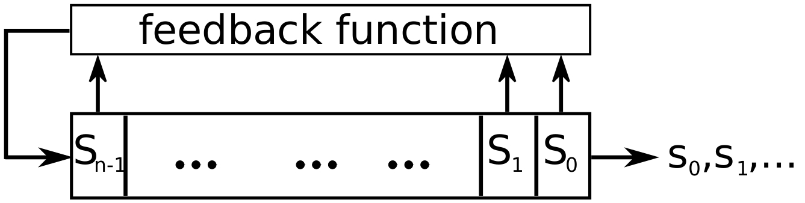
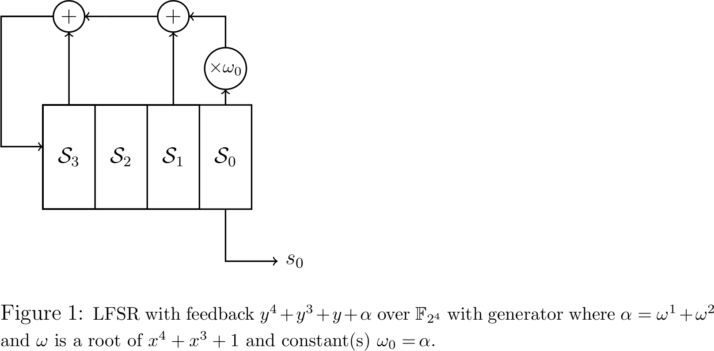

The GAP package FSR implements Feedback Shift Registers. Feedeback shift registers play an important role in stream cipher design. A well known early example of an LFSRs based stream cipher is A5/1, intended for securing GSM voice and data. A5/1 is built from three LFSRs with different periods and a stop-and-go majority function controlling their clocks. The A5/1 output is computed as XOR of outputs from all three LFSRs. A milestone in stream cipher design is the eSTREAM project \cite{estr}, launched in 2004. All 3 hardware portfolio ciphers, Grain, MICKEY (using Galois-style feedback) and Trivium, as well as the software portfolio cipher Sosemanuk, use FSRs. Grain is presented in section \ref{grt}. The stream cipher ACORN \cite{acorn}, a remaining round 3 CAESAR candidate \cite{caesar}, is based on 6 LFSRs. Last but not least, both stream ciphers used for encryption and integrity of communications in mobile networks, Snow3G and ZUC, use LFSRs over an extension field.
Another application area for LFSRs are the cyclic redundancy codes (CRC) used in many communication and data storage devices for error-detection. The LFSRs have been used as counters in applications where the order of the sequence does not matter, for example Xilinx proposed the use of LFSR counters to address the RAM \cite{xilinxLFSR} (by now declared obsolete). Furthermore, LFSRs are used for pattern generation in built-in self testing for electronic circuits. % NOTE: Peterson, W. W.; Brown, D. T. (January 1961). "Cyclic Codes for Error Detection.
Less noticeable is the use of LFSRs in algorithms for finite field arithmetic. For example, a serial circuit that requires multiplication by \(x\), followed by reduction modulo the field defining polynomial, can be implemented as an LFSR with the defining polynomial as feedback \cite{AHlec}.
An \(n\)-stage shift register over a finite field \(\mathcal{F}\) is an array of \(n\) registers (denoted \(S_t\), \(t=n-1, \ldots,0\)), and each stage holds a value from the underlying finite field \(\mathcal{F}\). \(n\) is also referred to as the length of the FSR. This memory array is shifted with each step \(S_t \rightarrow S_{t-1}\) for \(t=n-1, \dots,1\), and the vacant register \(S_{n-1}\) is updated with a new value obtained from the feedback function, hence the name feedback shift register (FSR). One of the stages is used to generate the output and each time the FSR is clocked. The chosen stage produces a new element \(s_i\in\mathcal{F}\). In this way, the FSR produces a sequence of elements:
\(\underline{s}=\{s_k\}= s_0,s_1,s_2,\dots\)
A simple schematic of an \(n\)-stage FSR shown in figure below produces the output sequence from stage \(S_0\).

The feedback function is a polynomial function in \(n\) variables (that correspond to the stages, i.e. variable \(x_t\) takes its value from the stage \(S_t\)):
\(f:\,\mathcal{F}^n \rightarrow \,\mathcal{F}\,\)
\(f(x_0,x_1,\dots,x_{n-1}) = \sum\limits_{\forall (i_0,i_1,\dots,i_{n-1}) \in Z_q^n}c_{i_0,i_1,\dots,i_{n-1}}x_0^{i_0} x_1^{i_1}\dots x_{n-1}^{i_{n-1}}\)
with coefficients \(c_{i_0,i_1,\dots,i_{n-1}}\in\mathcal{F}=\mathbb{F}_q\) and where \(i_t\in \mathbb{Z}_q\) and \(q\) is a prime or a prime power and \(t\in \mathbb{Z}_n\). The sum in the equation above runs over all possible monomials \( x_0^{i_0}x_1^{i_1}\dots x_{n-1}^{i_{n-1}}\).
The degree of a monomial is defined as the sum of all its powers and the degree of the polynomial as the maximum degree of all its monomials. For readability, notation \(m_{i_0,i_1,\dots,i_{n-1}}\) is introduced for monomials: \(m_{i_0,i_1,\dots,i_{n-1}}=m(x_0,x_1,\dots,x_{n-1})=x_0^{i_0}x_1^{i_1} \dots x_{n-1}^{i_{n-1}}\).
\({\rm Degree}(m(x_0,x_1,\dots,x_{n-1}))=\sum\limits_{t=0}^{n-1}i_t\)
\({\rm Degree}(f(x_0,x_1,\dots,x_{n-1}))=\max\limits_{\forall (i_0,i_1,\dots,i_{n-1})\in Z_q^n} \left\{{\rm Degree}(m_{i_0,i_1,\dots,i_{n-1}})\right\}\)
Based on the degree of the feedback polynomial, distinction is made between linear (LFSR (2.2-1)) and nonlianear (NLFSR (2.3-1)) feedback shift registers. For the linear case, the degree of the feedback polynomial is 1.
At any given moment, the contents of the FSR hold \(n\) values from the underlying finite field, and can be written as a vector of length \(n\): \((s_0,s_1,\dots,s_{n-1})\in\mathcal{F}^n\). This vector is called the state of the FSR, and the state right after loading the initial state. The output sequence \(\underline{s}\) is completely determined by the feedback polynomial and the initial state.
In case of \(q=2\), \(\mathcal{F}=\mathbb{F}_2\), function \(f\) is a boolean function and the FSR produces a binary sequence. In all other cases, the sequence is referred to as a \(q\)-arry sequence.
To keep the chapter short, details will be omitted and the reader can refer to a number of sources such as {\cite sdgc,GGbook,lidl}.
The FSR package allows creation, initialization and running of FSRs, and can compute some of their properties, such as length or internal state size. A third object called FILFUN, short for ``filtering function'' was added. A filtering function is simply a multivariate function. Because of the similarities between filtering functions and NLFSR feedbacks, the FILFUN is created as an FSR object, which allows the reuse of most NLFSR methods. The core functionality is organized into four basic parts:
common functionality for FSRs
LFSR specific functionality
NLFSR specific functionality
FILFUN specific functionality
The category of FSR objects is defined, and the FSRs can created as LFSRs, NLFSRs or FILFUNs. They are created through a function call with various possibilities for the arguments, and will return an object with four components, and some (case specific) attributes and properties. Only the values that can change during the FSRs lifetime are implemented as components:
init - initial state of the FSR
state - the current state of the FSR
numsteps - number of steps since object was created
basis - the basis used for representation of the field elements
Initial state is kept as a component because we want the ability to reload and run the same FSR without creating a new instance. Field init is empty when the FSR is created and is updated when its loaded. The component state is updated with each FSR step. Field numsteps keeps track of the FRS: when created its set to -1, when loaded to 0, and then increments with each step. It is used for coding purposes to prevent an attempt of running an empty FRS and to stop the FRS once a certain threshold is reached, preventing it from looping indefinitely. The basis field holds the current basis used for representation of elements and can be chained when needed.
Please note that there is no concept of shifting and updating of the state for the FILFUNS: the components init and state are loaded with same initial state, which is then used to evaluate the multivariate function, i.e. compute the ``feedback''. The computed value is the output of the FILFUN. Furthermore, state and numsteps are not updated.
The behavior of an FSR is captured with three methods:
LoadFSR - loads the initial state
StepFSR - computes the feedback value and
(i.) shifts stages, updates the vacant stage \(S_{n-1}\) and outputs the new sequence element in case of an (N)LFSR and
(ii.) outputs the computed feedback in case of a FILFUN.
RunFSR - a sequence of StepFSR calls (with options such as run, load and run, run for number of steps, ... available)
StepFSR comes in two versions, and both are inherited by the RunFSR as well:
regular step - FSR self-contained
external step - adds an external element to the computed feedback value
The external step and run are implemented because of their common use in cryptography.
Remainder of the FSR package consists of helper functions (for example to compute the degree of the feedback polynomial), writing functions (for example to print out a sequence of LFSR steps including the state changes to a *.txt file or directly as *.tex file) and drawing functions (generating the tikz for *.tex) as is shown in figure below. 
generated by GAPDoc2HTML